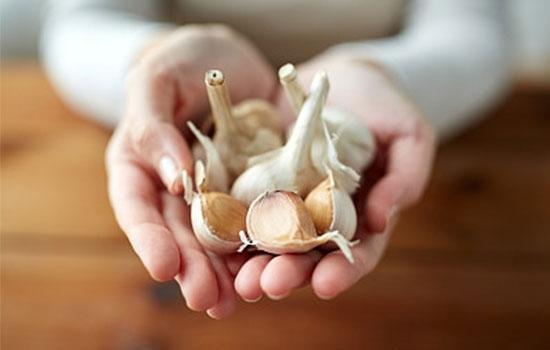
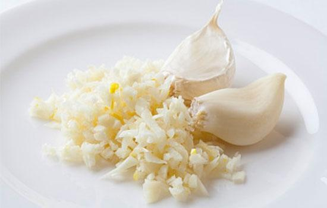
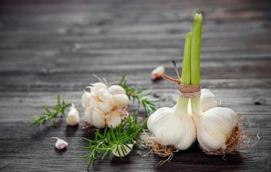

<!DOCTYPE html>
<html>

	<head>
		<meta charset="utf-8">
		<title>Hello MUI</title>
		<meta name="viewport" content="width=device-width, initial-scale=1,maximum-scale=1,user-scalable=no">
		<meta name="apple-mobile-web-app-capable" content="yes">
		<meta name="apple-mobile-web-app-status-bar-style" content="black">

		<link rel="stylesheet" href="http://i.gtimg.cn/vipstyle/frozenui/2.0.0/css/frozen.css">

		<!--标准mui.css-->
		<link rel="stylesheet" href="css/mui.min.css">
		<!--App自定义的css-->
		<link rel="stylesheet" href="css/news.css" />
	</head>
	<body>
		<div id="newsInfo"></div>
		<!-- <header class="mui-bar mui-bar-nav">
			<a class="mui-action-back mui-icon mui-icon-left-nav mui-pull-left"></a>
			<h1 class="mui-title">大蒜有什么功效</h1>
		</header>
		<div class="wdk-content mui-content">
			<div class="mui-content-padded">
				<h3 style="margin-left: 2.5%;margin-right: 2.5%;">大蒜有什么功效？为什么外国人抢着吃蒜？</h3>
				<span class="news-info">
					<span class="ui-avatar-tiled" style="margin-left: 3%;">
						<span style="background-image:url(images/cbd.jpg);" ></span>
					</span>
					<span class="news-info-font"><span class="news-auth-name">&nbsp;养生堂&nbsp;</span><span class="news-auth-name">01/07&nbsp;04:07</span></span>
				</span>
				
				<p>
					想必大家都知道青霉素，感冒发烧上医院，很多人都要打青霉素。至今已经拯救了8000多万条生命。倘若没有青霉素的发现，人类历史的人口将失去75%的比例。
					
					其实咱们经常吃的食物中就有一种“天然青霉素”，效力堪比抗菌剂，它就是大蒜，它不仅有青霉素的抗菌功效，还有化栓、抗癌、降糖、降脂的功效。
				</p>
				<div class="news-font">
					国家级名老中医、北京中医药大学教授史载祥说：“一瓣瓣的大蒜都是一颗颗救命良药，我第一个证实了，大蒜素有扩张冠脉的作用，堪称血管清道夫。”
				</div>
				<h4 style="font-weight: 500;">为什么外国人抢着吃蒜？</h5>
				<div class="news-font">
					很多人嫌弃蒜的味道，但是外国人都抢着吃大蒜，各国餐桌它是第一宠儿。
					
					大蒜是德国人长寿的秘密武器，一天三餐必有大蒜，连饭后蛋糕、冰淇淋也有大蒜风味，还有大蒜酒。法国人用大蒜鸡汤来抗感冒，韩国人靠蒜酱菜下饭开胃，日本人把大蒜做成蜜饯……这么受欢迎，因为大蒜的功效是在太多太多了，挑几个特别重要的来跟大家说说。
				</div>
				
				<h4 style="font-weight: 500;">1、抗炎灭菌</h4>
				<div class="news-font">
					据研究表明大蒜中含有一种叫“硫化丙烯”的辣素，其杀菌能力可达到青霉素的十分之一，对病原菌和寄生虫都有良好的杀灭作用，可以起到预防流感、防止伤口感染、治疗感染性疾病和驱虫的功效。
				</div>
				<h4 style="font-weight: 500;">2、抗癌防癌</h4>
				<div class="news-font">
					大蒜能保护肝脏，诱导肝细胞脱毒酶的活性，可以阻断亚硝胺致癌物质的合成，从而预防癌症的发生。同时大蒜中的锗和硒等元素还有良好的抑制癌瘤或抗癌作用。
				</div>
				<h4 style="font-weight: 500;">3、预防关节炎</h4>
				<div class="news-font">
					大蒜能“除风湿，破冷风”，对风寒湿类关节炎有抑制作用。
				</div>
				
				<h4 style="font-weight: 500;">4、调节胰岛素</h4>
				<div class="news-font">
					近年来由于人们的膳食结构不够合理，人体中硒的摄入减少，使得胰岛素合成下降;而大蒜中含硒较多，对人体中胰岛素合成下降有调节作用，所以糖尿病患者多食大蒜有助减轻病情。
				</div>
				<h4 style="font-weight: 500;">5、降低血脂、防止血栓</h4>
				<div class="news-font">
					大蒜有效成分具有明显的降血脂及预防冠心病和动脉硬化的作用，并可防止血栓的形成;流行病学研究显示，在每人平均每日吃生蒜20克的地区，心脑血管疾病死亡率明显低于无食用生蒜习惯的地区。
				</div>
				
				<h4 style="font-weight: 500;">6、延缓衰老、预防铅中毒</h4>
				<div class="news-font">
					常食大蒜能延缓衰老;它的抗氧化性优于人参;经常接解铅或有铅中毒倾向的人食用大蒜，能有效地预防铅中毒。
				</div>
				<h4 style="font-weight: 500;">7、有助勃起</h4>
				<div class="news-font">
					血液健康是影响勃起功能的重要因素，吃大蒜却能促进血液健康，改善勃起功能，可以说是天然伟哥了。
				</div>
			</div>
		</div> -->
	</body>
	<script src="js/mui.min.js"></script>
	<script src="js/mui.zoom.js"></script>
	<script src="js/mui.previewimage.js"></script>
	<script type="text/javascript" src="js/hui.js" charset="UTF-8"></script>
	<script src="https://cdn.bootcss.com/jquery/1.10.2/jquery.min.js"></script>
	<script>
		mui.previewImage();
	</script>
	<script>
		mui.init({
			swipeBack: true //启用右滑关闭功能
		});
		mui.ajax('http://127.0.0.1:8099/news/getStringNews',{
			dataType:'json',//服务器返回json格式数据
			type:'post',//HTTP请求类型
			timeout:10000,//超时时间设置为10秒；
			success:function(data){
				// alert(data.news);
				$("#newsInfo").html(data.news)
			},
			error:function(xhr,type,errorThrown){
				
			}
		});
	</script>
</html>
